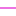

<!doctype html>
<html lang="en">
    <head>
        <meta charset="utf-8">
        <meta http-equiv="X-UA-Compatible" content="IE=edge">
        <meta name="viewport" content="initial-scale=1,user-scalable=no,maximum-scale=1,width=device-width">
        <meta name="mobile-web-app-capable" content="yes">
        <meta name="apple-mobile-web-app-capable" content="yes">
        <link rel="stylesheet" href="css/leaflet.css"><link rel="stylesheet" href="css/L.Control.Locate.min.css">
        <link rel="stylesheet" href="css/qgis2web.css"><link rel="stylesheet" href="css/fontawesome-all.min.css">
        <link rel="stylesheet" href="css/leaflet-control-geocoder.Geocoder.css">
        <link rel="stylesheet" href="css/leaflet-measure.css">
        <style>
        html, body, #map {
            width: 100%;
            height: 100%;
            padding: 0;
            margin: 0;
        }
        </style>
        <title></title>
    </head>
    <body>
        <div id="map">
        </div>
        <script src="js/qgis2web_expressions.js"></script>
        <script src="js/leaflet.js"></script><script src="js/L.Control.Locate.min.js"></script>
        <script src="js/leaflet.rotatedMarker.js"></script>
        <script src="js/leaflet.pattern.js"></script>
        <script src="js/leaflet-hash.js"></script>
        <script src="js/Autolinker.min.js"></script>
        <script src="js/rbush.min.js"></script>
        <script src="js/labelgun.min.js"></script>
        <script src="js/labels.js"></script>
        <script src="js/leaflet-control-geocoder.Geocoder.js"></script>
        <script src="js/leaflet-measure.js"></script>
        <script src="data/ZonaUrbanaGAM_3.js"></script>
        <script src="data/ReddetransportePblico_4.js"></script>
        <script src="data/EscuelastotalesdelGAM_5.js"></script>
        <script src="data/EscuelasseleccionadasdelGAM_6.js"></script>
        <script>
        var highlightLayer;
        function highlightFeature(e) {
            highlightLayer = e.target;

            if (e.target.feature.geometry.type === 'LineString') {
              highlightLayer.setStyle({
                color: '#ffff00',
              });
            } else {
              highlightLayer.setStyle({
                fillColor: '#ffff00',
                fillOpacity: 1
              });
            }
            highlightLayer.openPopup();
        }
        var map = L.map('map', {
            zoomControl:true, maxZoom:28, minZoom:1
        })
        var hash = new L.Hash(map);
        map.attributionControl.setPrefix('<a href="https://github.com/tomchadwin/qgis2web" target="_blank">qgis2web</a> &middot; <a href="https://leafletjs.com" title="A JS library for interactive maps">Leaflet</a> &middot; <a href="https://qgis.org">QGIS</a>');
        var autolinker = new Autolinker({truncate: {length: 30, location: 'smart'}});
        L.control.locate({locateOptions: {maxZoom: 19}}).addTo(map);
        var measureControl = new L.Control.Measure({
            position: 'topleft',
            primaryLengthUnit: 'meters',
            secondaryLengthUnit: 'kilometers',
            primaryAreaUnit: 'sqmeters',
            secondaryAreaUnit: 'hectares'
        });
        measureControl.addTo(map);
        document.getElementsByClassName('leaflet-control-measure-toggle')[0]
        .innerHTML = '';
        document.getElementsByClassName('leaflet-control-measure-toggle')[0]
        .className += ' fas fa-ruler';
        var bounds_group = new L.featureGroup([]);
        function setBounds() {
            if (bounds_group.getLayers().length) {
                map.fitBounds(bounds_group.getBounds());
            }
        }
        map.createPane('pane_GoogleSatellite_0');
        map.getPane('pane_GoogleSatellite_0').style.zIndex = 400;
        var layer_GoogleSatellite_0 = L.tileLayer('https://mt1.google.com/vt/lyrs=s&x={x}&y={y}&z={z}', {
            pane: 'pane_GoogleSatellite_0',
            opacity: 1.0,
            attribution: '',
            minZoom: 1,
            maxZoom: 28,
        });
        layer_GoogleSatellite_0;
        map.addLayer(layer_GoogleSatellite_0);
        map.createPane('pane_CartoLight_1');
        map.getPane('pane_CartoLight_1').style.zIndex = 401;
        var layer_CartoLight_1 = L.tileLayer('https://a.basemaps.cartocdn.com/light_all/{z}/{x}/{y}.pn', {
            pane: 'pane_CartoLight_1',
            opacity: 1.0,
            attribution: '',
            minZoom: 1,
            maxZoom: 28,
        });
        layer_CartoLight_1;
        map.addLayer(layer_CartoLight_1);
        map.createPane('pane_EsriStreet_2');
        map.getPane('pane_EsriStreet_2').style.zIndex = 402;
        var layer_EsriStreet_2 = L.tileLayer('https://server.arcgisonline.com/arcgis/rest/services/World_Street_Map/MapServer/tile/{z}/{y}/{x}', {
            pane: 'pane_EsriStreet_2',
            opacity: 1.0,
            attribution: '',
            minZoom: 1,
            maxZoom: 28,
        });
        layer_EsriStreet_2;
        map.addLayer(layer_EsriStreet_2);
        function pop_ZonaUrbanaGAM_3(feature, layer) {
            layer.on({
                mouseout: function(e) {
                    for (i in e.target._eventParents) {
                        e.target._eventParents[i].resetStyle(e.target);
                    }
                    if (typeof layer.closePopup == 'function') {
                        layer.closePopup();
                    } else {
                        layer.eachLayer(function(feature){
                            feature.closePopup()
                        });
                    }
                },
                mouseover: highlightFeature,
            });
            var popupContent = '<table>\
                    <tr>\
                        <td colspan="2">' + (feature.properties['fid'] !== null ? autolinker.link(feature.properties['fid'].toLocaleString()) : '') + '</td>\
                    </tr>\
                    <tr>\
                        <td colspan="2">' + (feature.properties['id'] !== null ? autolinker.link(feature.properties['id'].toLocaleString()) : '') + '</td>\
                    </tr>\
                    <tr>\
                        <td colspan="2">' + (feature.properties['perimeter'] !== null ? autolinker.link(feature.properties['perimeter'].toLocaleString()) : '') + '</td>\
                    </tr>\
                    <tr>\
                        <td colspan="2">' + (feature.properties['area'] !== null ? autolinker.link(feature.properties['area'].toLocaleString()) : '') + '</td>\
                    </tr>\
                    <tr>\
                        <td colspan="2">' + (feature.properties['hectares'] !== null ? autolinker.link(feature.properties['hectares'].toLocaleString()) : '') + '</td>\
                    </tr>\
                    <tr>\
                        <td colspan="2">' + (feature.properties['nombre'] !== null ? autolinker.link(feature.properties['nombre'].toLocaleString()) : '') + '</td>\
                    </tr>\
                </table>';
            layer.bindPopup(popupContent, {maxHeight: 400});
        }

        function style_ZonaUrbanaGAM_3_0() {
            return {
                pane: 'pane_ZonaUrbanaGAM_3',
                opacity: 1,
                color: 'rgba(227,26,28,1.0)',
                dashArray: '',
                lineCap: 'butt',
                lineJoin: 'miter',
                weight: 4.0, 
                fill: true,
                fillOpacity: 1,
                fillColor: 'rgba(244,144,50,0.0)',
                interactive: true,
            }
        }
        map.createPane('pane_ZonaUrbanaGAM_3');
        map.getPane('pane_ZonaUrbanaGAM_3').style.zIndex = 403;
        map.getPane('pane_ZonaUrbanaGAM_3').style['mix-blend-mode'] = 'normal';
        var layer_ZonaUrbanaGAM_3 = new L.geoJson(json_ZonaUrbanaGAM_3, {
            attribution: '',
            interactive: true,
            dataVar: 'json_ZonaUrbanaGAM_3',
            layerName: 'layer_ZonaUrbanaGAM_3',
            pane: 'pane_ZonaUrbanaGAM_3',
            onEachFeature: pop_ZonaUrbanaGAM_3,
            style: style_ZonaUrbanaGAM_3_0,
        });
        bounds_group.addLayer(layer_ZonaUrbanaGAM_3);
        map.addLayer(layer_ZonaUrbanaGAM_3);
        function pop_ReddetransportePblico_4(feature, layer) {
            layer.on({
                mouseout: function(e) {
                    for (i in e.target._eventParents) {
                        e.target._eventParents[i].resetStyle(e.target);
                    }
                    if (typeof layer.closePopup == 'function') {
                        layer.closePopup();
                    } else {
                        layer.eachLayer(function(feature){
                            feature.closePopup()
                        });
                    }
                },
                mouseover: highlightFeature,
            });
            var popupContent = '<table>\
                    <tr>\
                        <td colspan="2"><strong>fid</strong><br />' + (feature.properties['fid'] !== null ? autolinker.link(feature.properties['fid'].toLocaleString()) : '') + '</td>\
                    </tr>\
                    <tr>\
                        <th scope="row">objectid_1</th>\
                        <td>' + (feature.properties['objectid_1'] !== null ? autolinker.link(feature.properties['objectid_1'].toLocaleString()) : '') + '</td>\
                    </tr>\
                    <tr>\
                        <th scope="row">operador</th>\
                        <td>' + (feature.properties['operador'] !== null ? autolinker.link(feature.properties['operador'].toLocaleString()) : '') + '</td>\
                    </tr>\
                    <tr>\
                        <th scope="row">cantoninic</th>\
                        <td>' + (feature.properties['cantoninic'] !== null ? autolinker.link(feature.properties['cantoninic'].toLocaleString()) : '') + '</td>\
                    </tr>\
                    <tr>\
                        <th scope="row">cantonfina</th>\
                        <td>' + (feature.properties['cantonfina'] !== null ? autolinker.link(feature.properties['cantonfina'].toLocaleString()) : '') + '</td>\
                    </tr>\
                    <tr>\
                        <th scope="row">km_aresep</th>\
                        <td>' + (feature.properties['km_aresep'] !== null ? autolinker.link(feature.properties['km_aresep'].toLocaleString()) : '') + '</td>\
                    </tr>\
                    <tr>\
                        <th scope="row">distancia</th>\
                        <td>' + (feature.properties['distancia'] !== null ? autolinker.link(feature.properties['distancia'].toLocaleString()) : '') + '</td>\
                    </tr>\
                    <tr>\
                        <th scope="row">pendiente</th>\
                        <td>' + (feature.properties['pendiente'] !== null ? autolinker.link(feature.properties['pendiente'].toLocaleString()) : '') + '</td>\
                    </tr>\
                    <tr>\
                        <th scope="row">añoramal</th>\
                        <td>' + (feature.properties['añoramal'] !== null ? autolinker.link(feature.properties['añoramal'].toLocaleString()) : '') + '</td>\
                    </tr>\
                </table>';
            layer.bindPopup(popupContent, {maxHeight: 400});
        }

        function style_ReddetransportePblico_4_0() {
            return {
                pane: 'pane_ReddetransportePblico_4',
                opacity: 1,
                color: 'rgba(225,26,208,1.0)',
                dashArray: '',
                lineCap: 'square',
                lineJoin: 'bevel',
                weight: 1.0,
                fillOpacity: 0,
                interactive: true,
            }
        }
        map.createPane('pane_ReddetransportePblico_4');
        map.getPane('pane_ReddetransportePblico_4').style.zIndex = 404;
        map.getPane('pane_ReddetransportePblico_4').style['mix-blend-mode'] = 'normal';
        var layer_ReddetransportePblico_4 = new L.geoJson(json_ReddetransportePblico_4, {
            attribution: '',
            interactive: true,
            dataVar: 'json_ReddetransportePblico_4',
            layerName: 'layer_ReddetransportePblico_4',
            pane: 'pane_ReddetransportePblico_4',
            onEachFeature: pop_ReddetransportePblico_4,
            style: style_ReddetransportePblico_4_0,
        });
        bounds_group.addLayer(layer_ReddetransportePblico_4);
        map.addLayer(layer_ReddetransportePblico_4);
        function pop_EscuelastotalesdelGAM_5(feature, layer) {
            layer.on({
                mouseout: function(e) {
                    for (i in e.target._eventParents) {
                        e.target._eventParents[i].resetStyle(e.target);
                    }
                    if (typeof layer.closePopup == 'function') {
                        layer.closePopup();
                    } else {
                        layer.eachLayer(function(feature){
                            feature.closePopup()
                        });
                    }
                },
                mouseover: highlightFeature,
            });
            var popupContent = '<table>\
                    <tr>\
                        <td colspan="2">' + (feature.properties['fid'] !== null ? autolinker.link(feature.properties['fid'].toLocaleString()) : '') + '</td>\
                    </tr>\
                    <tr>\
                        <td colspan="2">' + (feature.properties['circuito'] !== null ? autolinker.link(feature.properties['circuito'].toLocaleString()) : '') + '</td>\
                    </tr>\
                    <tr>\
                        <td colspan="2"><strong>nombre</strong><br />' + (feature.properties['nombre'] !== null ? autolinker.link(feature.properties['nombre'].toLocaleString()) : '') + '</td>\
                    </tr>\
                    <tr>\
                        <th scope="row">provincia</th>\
                        <td>' + (feature.properties['provincia'] !== null ? autolinker.link(feature.properties['provincia'].toLocaleString()) : '') + '</td>\
                    </tr>\
                    <tr>\
                        <th scope="row">canton</th>\
                        <td>' + (feature.properties['canton'] !== null ? autolinker.link(feature.properties['canton'].toLocaleString()) : '') + '</td>\
                    </tr>\
                    <tr>\
                        <th scope="row">distrito</th>\
                        <td>' + (feature.properties['distrito'] !== null ? autolinker.link(feature.properties['distrito'].toLocaleString()) : '') + '</td>\
                    </tr>\
                    <tr>\
                        <th scope="row">zona</th>\
                        <td>' + (feature.properties['zona'] !== null ? autolinker.link(feature.properties['zona'].toLocaleString()) : '') + '</td>\
                    </tr>\
                    <tr>\
                        <th scope="row">telefono</th>\
                        <td>' + (feature.properties['telefono'] !== null ? autolinker.link(feature.properties['telefono'].toLocaleString()) : '') + '</td>\
                    </tr>\
                </table>';
            layer.bindPopup(popupContent, {maxHeight: 400});
        }

        function style_EscuelastotalesdelGAM_5_0() {
            return {
                pane: 'pane_EscuelastotalesdelGAM_5',
                radius: 2.8,
                opacity: 1,
                color: 'rgba(35,35,35,1.0)',
                dashArray: '',
                lineCap: 'butt',
                lineJoin: 'miter',
                weight: 1,
                fill: true,
                fillOpacity: 1,
                fillColor: 'rgba(44,169,241,1.0)',
                interactive: true,
            }
        }
        map.createPane('pane_EscuelastotalesdelGAM_5');
        map.getPane('pane_EscuelastotalesdelGAM_5').style.zIndex = 405;
        map.getPane('pane_EscuelastotalesdelGAM_5').style['mix-blend-mode'] = 'normal';
        var layer_EscuelastotalesdelGAM_5 = new L.geoJson(json_EscuelastotalesdelGAM_5, {
            attribution: '',
            interactive: true,
            dataVar: 'json_EscuelastotalesdelGAM_5',
            layerName: 'layer_EscuelastotalesdelGAM_5',
            pane: 'pane_EscuelastotalesdelGAM_5',
            onEachFeature: pop_EscuelastotalesdelGAM_5,
            pointToLayer: function (feature, latlng) {
                var context = {
                    feature: feature,
                    variables: {}
                };
                return L.circleMarker(latlng, style_EscuelastotalesdelGAM_5_0(feature));
            },
        });
        bounds_group.addLayer(layer_EscuelastotalesdelGAM_5);
        map.addLayer(layer_EscuelastotalesdelGAM_5);
        function pop_EscuelasseleccionadasdelGAM_6(feature, layer) {
            layer.on({
                mouseout: function(e) {
                    for (i in e.target._eventParents) {
                        e.target._eventParents[i].resetStyle(e.target);
                    }
                    if (typeof layer.closePopup == 'function') {
                        layer.closePopup();
                    } else {
                        layer.eachLayer(function(feature){
                            feature.closePopup()
                        });
                    }
                },
                mouseover: highlightFeature,
            });
            var popupContent = '<table>\
                    <tr>\
                        <td colspan="2"><strong>id</strong><br />' + (feature.properties['id'] !== null ? autolinker.link(feature.properties['id'].toLocaleString()) : '') + '</td>\
                    </tr>\
                    <tr>\
                        <td colspan="2"><strong>NOMBRE</strong><br />' + (feature.properties['NOMBRE'] !== null ? autolinker.link(feature.properties['NOMBRE'].toLocaleString()) : '') + '</td>\
                    </tr>\
                    <tr>\
                        <th scope="row">TELEFONO</th>\
                        <td>' + (feature.properties['TELEFONO'] !== null ? autolinker.link(feature.properties['TELEFONO'].toLocaleString()) : '') + '</td>\
                    </tr>\
                    <tr>\
                        <th scope="row">AREA</th>\
                        <td>' + (feature.properties['AREA'] !== null ? autolinker.link(feature.properties['AREA'].toLocaleString()) : '') + '</td>\
                    </tr>\
                    <tr>\
                        <th scope="row">FECHA INIC</th>\
                        <td>' + (feature.properties['FECHA INIC'] !== null ? autolinker.link(feature.properties['FECHA INIC'].toLocaleString()) : '') + '</td>\
                    </tr>\
                </table>';
            layer.bindPopup(popupContent, {maxHeight: 400});
        }

        function style_EscuelasseleccionadasdelGAM_6_0() {
            return {
                pane: 'pane_EscuelasseleccionadasdelGAM_6',
                radius: 4.0,
                opacity: 1,
                color: 'rgba(35,35,35,1.0)',
                dashArray: '',
                lineCap: 'butt',
                lineJoin: 'miter',
                weight: 1,
                fill: true,
                fillOpacity: 1,
                fillColor: 'rgba(104,243,40,1.0)',
                interactive: true,
            }
        }
        map.createPane('pane_EscuelasseleccionadasdelGAM_6');
        map.getPane('pane_EscuelasseleccionadasdelGAM_6').style.zIndex = 406;
        map.getPane('pane_EscuelasseleccionadasdelGAM_6').style['mix-blend-mode'] = 'normal';
        var layer_EscuelasseleccionadasdelGAM_6 = new L.geoJson(json_EscuelasseleccionadasdelGAM_6, {
            attribution: '',
            interactive: true,
            dataVar: 'json_EscuelasseleccionadasdelGAM_6',
            layerName: 'layer_EscuelasseleccionadasdelGAM_6',
            pane: 'pane_EscuelasseleccionadasdelGAM_6',
            onEachFeature: pop_EscuelasseleccionadasdelGAM_6,
            pointToLayer: function (feature, latlng) {
                var context = {
                    feature: feature,
                    variables: {}
                };
                return L.circleMarker(latlng, style_EscuelasseleccionadasdelGAM_6_0(feature));
            },
        });
        bounds_group.addLayer(layer_EscuelasseleccionadasdelGAM_6);
        map.addLayer(layer_EscuelasseleccionadasdelGAM_6);
        var osmGeocoder = new L.Control.Geocoder({
            collapsed: true,
            position: 'topleft',
            text: 'Search',
            title: 'Testing'
        }).addTo(map);
        document.getElementsByClassName('leaflet-control-geocoder-icon')[0]
        .className += ' fa fa-search';
        document.getElementsByClassName('leaflet-control-geocoder-icon')[0]
        .title += 'Search for a place';
        var baseMaps = {};
        L.control.layers(baseMaps,{' Escuelas seleccionadas del GAM': layer_EscuelasseleccionadasdelGAM_6,' Escuelas totales del GAM': layer_EscuelastotalesdelGAM_5,' Red de transporte Público': layer_ReddetransportePblico_4,' Zona Urbana (GAM)': layer_ZonaUrbanaGAM_3,"Esri Street": layer_EsriStreet_2,"Carto Light": layer_CartoLight_1,"Google Satellite": layer_GoogleSatellite_0,}).addTo(map);
        setBounds();
        </script>
    </body>
</html>
